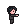
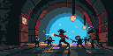
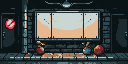
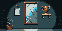
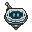

初めて降りる乗客のための案内書 · アプリ1.1.4基準 · 2026年11月27日更新
スタートガイド
Neon Stationは、つけておけばキャラクターが勝手に戦う放置RPGです。1日数分のぞくだけで十分です。このページを読めば、初日に何をすればいいか、いつ何が開くかがわかります。

ようこそ、ランナー。私は0番ホームの案内ドローンです。ゲームの中でも、メニューに初めて入るたびに私が短く道をご案内します。このページはその内容を一か所にまとめたものです。
1インストール
iPhone · iPad
- App Storeで「Neon Station」を探してインストールします。
- アプリを開くとアカウントが自動で作成されます。会員登録はありません。
Android 審査中
- Google Playでの正式リリースの審査を待っています。
- リリースされたら、Google Playで「Neon Station」を探してインストールします。リリース情報はお知らせとInstagramでお伝えします。

進行は10分ごとにサーバーへ自動でバックアップされます（1.1.4から、ゲストを含む）。スマホを変えたりアプリを削除したりする予定があるなら、プロフィール › アカウント連携でGoogle・Appleアカウントをつなぐか、復旧コードを作っておいてください。新しい端末でそのまま読み込めます。
2最初の10分
初めて起動すると三つの集団から一つを選びます。どれを選んでも装備と外見は同じように集められるので、気に入ったほうを選べば大丈夫です。違いは初期武器と小さなパッシブボーナスです。



- イントロを見る7カットの短い物語が流れます。スキップしてもよく、あとでプロフィール › 設定から見直せます。
- 戦闘が勝手に進むのを確かめる1区域ラスト下水道で自動狩りが始まります。何も押さなくてもギャングを倒してコインがたまります。
- コインがたまったら武器商と取引する［アドオン］ › ［武器商］でコインを使って取引すると、ランダムな装備が出ます。最初から開いています。
- ▲の付いた装備を着る▲は装備すると戦闘力が上がる装備です。着た瞬間にキャラクターの姿も変わります。余った装備は［一括売却］で整理します。
- 名声で武器商を上げる取引するたびに名声が1ずつたまります。名声で武器商をアップグレードすると、より高い等級が出ます。
- ショップで無料ボックスを開ける［ショップ］の無料ボックスは毎日午前9時に新しく開きます。初めて始めるとクレジット100も一緒にもらえます。
3画面を見て回る
画面の下にタブが5つあります。上にはレベル、戦闘力、通貨が表示され、左上のプロフィール画像をタップするとプロフィールが開きます。

下のタブ 1
バトル自動狩りとボス戦。装備中の装備、自分のステータス、プレイ報酬がここにあります。
下のタブ 2
特殊依頼通貨ごとに専用の依頼があります。依頼ごとに1日3回挑戦するか掃討します。
下のタブ 3
アドオン武器商、インプラント、スキルツリー、ペット、パレットビルダー。レベルが上がると順に開きます。
下のタブ 4
オンライン左のカードはPVP（地下闘技場ピット）、右のカードはライン（ギルド）です。
下のタブ 5
ショップ無料ボックス、クレジット商品、自動取引、PvP挑戦券、依頼の追加入場。
左上のプロフィール
プロフィール称号、ランキング、アカウント連携、クーポン入力、ゲームガイド、言語設定。
バトル画面の下のチャットバーをタップすると全体チャットが開きます。ほかのランナーの名前をタップするとプロフィールを見て親善決闘を申し込めます。
4成長の順番
ゲームの大きな流れは一つです。狩りで集めたコインで装備を替え、強くなったぶんだけ深い区域へ降りていきます。
- 狩りつけておけば自動。閉じていても最大3時間たまる
- コイン狩り · オフライン報酬 · 金庫襲撃
- 武器商の取引コイン → ランダム装備、取引ごとに名声 +1
- 装備▲の装備に替えると戦闘力と姿が一緒に変わる
- 次の区域ボスを越えて10区域データコアまで
そして名声 → 武器商アップグレード → より高い等級 → また取引。
区域ごとにステージが20、ステージごとにウェーブが5あります。10・20ステージはボス戦です。負けるとそのステージを最初からやり直すので、詰まったら装備を替えて再挑戦しましょう。10区域のボスを倒すと、より強くなった都市がまた始まります。
5レベルごとに開くもの
アカウントレベル
戦闘の経験値で上がるレベルです。ロックされたメニューにはシャッターと解放レベルが表示され、開くと通知が出ます。
- Lv1武器商 · 特殊依頼 · PVP · ショップ特殊依頼「ギャング金庫襲撃」（コイン）、「解決屋の依頼」（名声）から始まります。
- Lv5インプラントクロームで神経・骨格・知能インプラントを施術します。「サイボーグ廃棄場」（クローム）の依頼も一緒に開きます。
- Lv10スキルツリー · ラインチップでステータス・依頼・PVP・インプラント・ペット・アドオンの6系統のスキルを上げます。「中継サーバーハッキング」（チップ）の依頼が開き、オンラインタブでギルドのラインに乗れます。
- Lv15ペット食料でロボットペットとドローン55種（等級ごとに5種）をお迎えします。「補給トラック強奪」（食料）の依頼が開きます。
- Lv20パレットビルダー外見図鑑、塗装、スタイルタグ、シグネチャーセット。
- Lv50インプラントの2つ目の枠系統ごとに2つ目の枠が開きます。
武器商のレベルと装備の等級
武器商のレベルがその等級の解放レベルに届くと、その等級が出ます。武器商はLv50まで上がります。
武器商のアップグレードには待ち時間があります（序盤は数分、後半は最大2日）。広告を見ると30分ずつ短縮でき（一度に2回）、クレジットですぐ完了することもできます（残り1分につき1クレジット）。終わると通知が来ます。
61日にやること
ほとんどは毎日午前9時（韓国時間＝日本時間）にリセットされます。下のリストはこのブラウザにだけ保存されるチェックリストで、午前9時を過ぎると自動で空になります。
毎週月曜日 午前9時
- PVPの週間順位が確定します。PVP画面上の「先週の順位報酬」で［報酬を受け取る］を押してください。一度でも対戦したランナーだけが順位に入ります。
- 鎮圧列車が1号から再スタートします。1号ブラックアウトから10号終着駅まで、段階が上がるほど体力が大きく増え、報酬も大きくなります。報酬はその列車に与えたダメージ（貢献度）に応じて分配されます。
76つの通貨
| 通貨 | 入手先 | 使い道 |
|---|---|---|
| 狩り、オフライン報酬、「ギャング金庫襲撃」 | 武器商の取引、ラインの乗車券 | |
| 武器商の取引1回ごとに +1、「解決屋の依頼」 | 武器商アップグレード、シグネチャーセットのヒントの欠片 | |
| ボス、「サイボーグ廃棄場」 | インプラントの施術・強化、設計図の欠片との交換 | |
| ボス、「補給トラック強奪」 | ペットのお迎え、設計図の欠片との交換 | |
| 「中継サーバーハッキング」、ライントークンショップ | スキルツリー | |
| 無料ボックス、開始時100、PvP週間報酬、鎮圧列車、ショップでのチャージ | 即時完了（1分 = 1）、自動取引（20）、PvP挑戦券、依頼の追加入場（40）、ニックネーム変更（50）、ラインの作成（100） |
このほか、装備を売るとたまる設計図の欠片（外見の解放・塗装）と、ラインの中だけで使うトークンがあります。オフライン報酬や特殊依頼などの報酬は、広告を見ると3倍で受け取れます。
8知っておきたいコツ
装備がたまりすぎます
武器商のインベントリは、装備したときに戦闘力が大きく上がる順に並びます。［一括売却］は、装備しても戦闘力が上がらない装備だけを売ります。大事な装備は装備詳細で［ロック］を押しておくと売却から守られます。
高い等級が出ません（天井）
同じ武器商レベルで200回取引するあいだに、そのレベルの解放等級以上が一度も出なければ、次の取引で解放等級が確定で出ます。リッパーメディック・ペットブリーダーは100回で、この二人はLv15まで上がり、クォンタム（Lv12）・ヴォイド（Lv14）・オリジン（Lv15）等級が開きます。武器商の肖像をタップするとレベル別の確率表をめくって見られ、ほかの等級別の確率も各画面の「確率情報」ですべて確認できます。
近接と遠距離、どちらがいいですか？
遠距離はその場で撃ち、近接は敵の前まで歩いて戦います。近づくあいだに受ける攻撃を補うため、近接武器は受けるダメージが8%減り、PVPでは追加の補正が付きます。装備のサブオプションの「近接攻撃力」・「遠距離攻撃力」は装備中の武器の種類が合うときだけ適用されるので、武器を替えるときはオプションも一緒に確認しましょう。
シグネチャーセットはどうやってそろえますか？
① ヒントの欠片3つで必要な部位と外見を突き止めます（プレイ中に得るか名声で買います）。② その外見を図鑑で解放します（装備を手に入れるか設計図の欠片で解放）。③ 必要な枠をすべてその外見で装備するか塗装します。すべてそろった瞬間に自動で発見され、セットのオーラ・セットのプロフィール・称号がもらえます。セットは40種で、31〜40番は上位外見（アイテムLv26以上）でそろえます。
塗装とは何ですか？
パレットビルダー › スタイルタブで、装備の枠に別の外見を着せることです。能力値はそのままで、見た目とスタイルタグだけが変わります。費用は設計図の欠片で、消すのは無料です。
スマホを変えると進行が消えますか？
1.1.4からはゲストアカウントも進行が10分ごとにサーバーへバックアップされます。ただし新しい端末で読み込むには鍵が必要です。プロフィール › アカウント連携でGoogle・Appleアカウントをつなぐか、その下で16桁の復旧コードを作って安全な場所に書き留めてください。新しい端末の種族選択画面またはプロフィールでコードを入力すると進行を読み込みます。復旧コードは作成した端末でのみ再表示できるので、必ず別に保管してください。
クーポンはどこでもらえますか？
クーポンコードはInstagram @_neon_station とこのサイトのお知らせに掲載されます。プロフィール › ［クーポン入力］に入れると報酬を受け取れます。アカウントごとに1回で、インターネット接続が必要です。
ほかの言語に変えたいです
プロフィール › 設定 › 言語で 한국어・English・中文(简体)・日本語 から選びます。すぐに反映されます。チャットのメッセージとニックネームは翻訳されません。
チャットで不快なメッセージを見ました
その人の名前をタップしてプロフィールを開き、［通報］または［ブロック］を押してください。通報は運営が確認し、複数回通報されたメッセージは自動で非表示になります。ブロックした人のメッセージは表示されません。
9用語
- ランナー
- プレイヤー。ゲームの中の名前はチップが空の「ヌル」です。
- アドオン
- 0番ホームの商人と成長メニューをまとめたタブ。
- ピット
- 地下闘技場。PVPをする場所。
- ライン
- ギルド。ラインのリーダーは機関士、副リーダーは車掌。
- 鎮圧列車
- 毎週1号から10号まで順に下りてくるラインのボス。
- 天井
- 決まった回数のうちに良い等級が出なければ確定で与える仕組み。
- 設計図の欠片
- 装備を売るとたまる素材。外見の解放と塗装に使います。
- 共鳴
- 装備5枠がすべて同じ等級以上のときに付くボーナス。
- エコー感染
- 高い等級のインプラントとエネルギー外見が重なると生じる、強いが危険な状態。
- 掃討
- すでにクリアした依頼の報酬を、戦闘なしですぐに受け取ること。
- アイテムレベル
- 同じ等級の中でのレベル（1〜50）。Lv26から上位外見になります。
- 復旧コード
- 16桁のコード。アカウント連携なしでも新しい端末で進行を読み込む鍵です。
- 神経負荷
- インプラントの等級の合計の上限。スキルツリーのインプラント系統で増えます。
10もっと知る
ゲームの中でもプロフィール › ゲームガイドを押すと、メニューごとの詳しいルールを確認できます。よい旅を、ランナー。